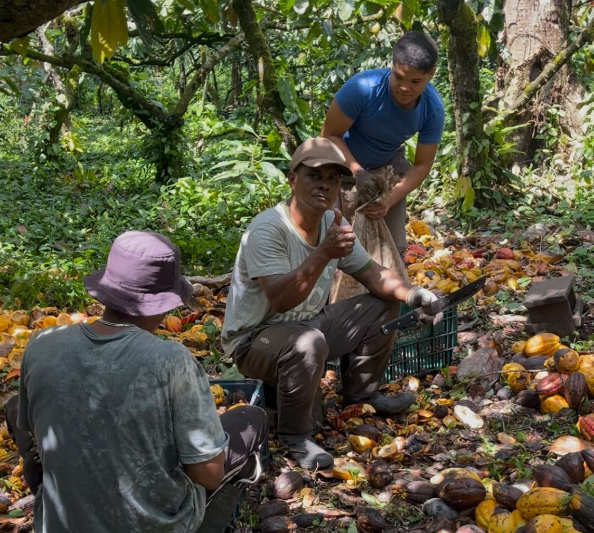

Inventory is a moral object
For brands built on regeneration, equity, and transparency, inventory can feel ideologically inconvenient. Capital tied up in beans, nibs, or bars contradicts the tidy story of “direct trade” as instantaneous virtue. Yet anyone who has lived through a harvest knows the truth: time and space are not optional. Someone pays for the breathing room between processing and purchase.
This piece names two under-discussed realities we hear echoed across food and cooperative networks: first, that warehousing is part of product quality; second, that “mystery inventory”—stock purchased when demand is still fuzzy—is often the price of keeping producers from bearing all the risk alone.
Warehousing is not “overhead,” it is continuity
Temperature and humidity regimes are not luxuries for chocolate—they are guardrails for flavor stability and food safety. A community that skips disciplined storage learns the same lesson twice: once on the thermometer, once on the balance sheet.
Good warehouse partners translate values into procedures: segregation of lots, clear labeling, first-expired-first-out discipline, and incident logs when something deviates. That is governance in steel and insulation.
Depreciation is the shadow price of optimism
Carrying cost is easy to postpone in conversation and impossible to postpone in accounting. Insurance, rent, utilities, labor for handling, and the opportunity cost of cash form a steady drip. When markets slow, that drip sounds louder.
Mission-driven teams sometimes treat these numbers as a betrayal of the mission. A healthier framing: depreciation and shrink are information. They tell you where forecasts were kind, where SKUs should merge, and which customer narratives actually converted to rotation.
What we mean by “mystery inventory”
“Mystery inventory” is our shorthand for product that was secured to support growers and schedules before downstream demand locked—often for good reasons (seasonality, MOQs, freight consolidation). It is not shameful; it is structural. Small brands bridge timing gaps that large players paper over with data and credit lines.
The ethical question is not whether mystery inventory exists, but whether risk is named, shared, and communicated. Communities deserve to know what is committed, what is flexible, and what happens if velocity lags.
Transparency as operational hygiene
Published movement and consignment records do not replace relationships, but they reduce rumor tax. When stakeholders can see what moved, where it sat, and how it ties to public ledgers, conversations return to strategy instead of suspicion.
If you are evaluating partnership with Agroverse on the physical side, start with the practical documents: warehouse partnership terms and distribution partnership terms, alongside TrueSight’s shipment history.
Closing: carry the story honestly
The most regenerative thing a brand can do is refuse to pretend that storage and carrying cost are someone else’s problem. Naming them is how we keep farmers from being the residual claimants on every market wobble.
Join the discussion
Warehouse managers, makers, and finance volunteers—we would love your checklists and failure stories in Telegram and on the DAO web app.